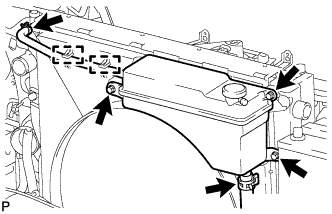
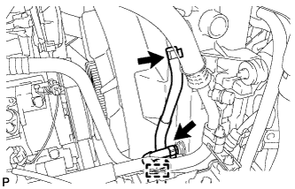
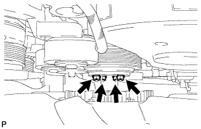
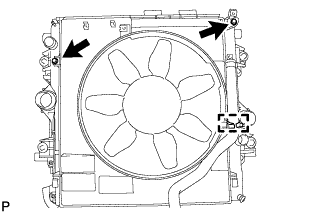
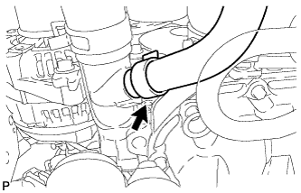
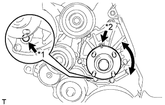
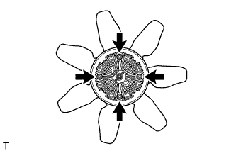
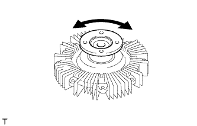
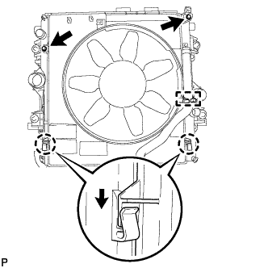
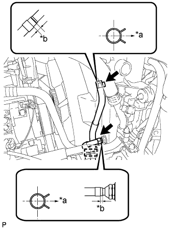

НАСОС СИСТЕМЫ ОХЛАЖДЕНИЯ (для моделей без DPF) > ПРОВЕРКА БЕЗ СНЯТИЯ С АВТОМОБИЛЯ |
| 1. СНИМИТЕ КОЖУХ ВЕНТИЛЯТОРА |
|  |
Отсоедините перепускной шланг охлаждающей жидкости № 1, отсоедините 2 зажима от кожуха вентилятора.
Отсоедините перепускной шланг охлаждающей жидкости № 2 от расширительного бачка радиатора.
Выверните 3 болта и снимите расширительный бачок радиатора.
Для моделей с автоматической трансмиссией:
Отсоедините впускной и выпускной патрубки масляного радиатора и открепите зажим от кожуха вентилятора.
|  |
Отсоедините от радиатора 2 патрубка масляного радиатора.
|  |
Ослабьте 4 гайки, крепящие вискомуфту и вентилятор.
Снимите поликлиновой ремень вентилятора и генератора (Нажмите здесь).
|  |
Выверните 2 болта, крепящие кожух вентилятора.
Отверните 4 гайки вентилятора с вискомуфтой, а затем снимите кожух вместе с вентилятором вискомуфты.
Отсоедините перепускной шланг охлаждающей жидкости № 2 от зажима шланга на кожухе вентилятора.
|  |
Отсоедините перепускной шланг охлаждающей жидкости № 2 от впускного патрубка охлаждающей жидкости.
Снимите шкив вентилятора с насоса системы охлаждения.
| 2. ПРОВЕРЬТЕ НАСОС СИСТЕМЫ ОХЛАЖДЕНИЯ В СБОРЕ |
|  |
Визуально проверьте отверстия для выпуска воздуха и слива охлаждающей жидкости и убедитесь в отсутствии утечки охлаждающей жидкости.
| *1 | Отверстие для слива охлаждающей жидкости |
| *2 | Отверстие для выпуска воздуха |
Проверните шкив и убедитесь, что подшипник насоса вращается плавно и бесшумно.
Если подшипник движется рывками или создает шум, замените насос системы охлаждения в сборе.
| 3. ПРОВЕРЬТЕ ВИСКОМУФТУ В СБОРЕ |
|  |
Отверните 4 гайки и снимите вентилятор.
|  |
Проверьте вискомуфту на повреждения и утечку силиконового масла. При необходимости замените вискомуфту.
Закрепите вентилятор 4 гайками.
| 4. УСТАНОВИТЕ КОЖУХ ВЕНТИЛЯТОРА |
Установите шкив вентилятора на насос системы охлаждения.
Подсоедините перепускной шланг охлаждающей жидкости № 2 к впускному патрубку охлаждающей жидкости.
Временно закрепите 4 гайками кожух вместе с вентилятором вискомуфты на насосе системы охлаждения. Затяните гайки вручную до упора.
|  |
Присоедините захваты кожуха к радиатору, как показано на рисунке.
Установите кожух вентилятора на радиатор и закрепите 2 болтами.
Установите поликлиновой ремень вентилятора и генератора (Нажмите здесь).
Закрепите вентилятор с вискомуфтой в сборе на насосе системы охлаждения 4 гайками.
Присоедините перепускной шланг охлаждающей жидкости № 2 к зажиму на кожухе вентилятора.
Для моделей с автоматической трансмиссией:
|  |
Подсоедините 2 патрубка масляного радиатора.
| *a | Правая сторона |
| *b | 2 - 7 мм |
Присоедините 2 шланга масляного радиатора к зажиму на кожухе вентилятора.
Подсоедините перепускной шланг охлаждающей жидкости № 2 к расширительному бачку радиатора.
Подсоедините перепускной шланг охлаждающей жидкости № 1 к кожуху вентилятора и закрепите его 2 зажимами.
Установите расширительный бачок радиатора и закрепите его 3 болтами.